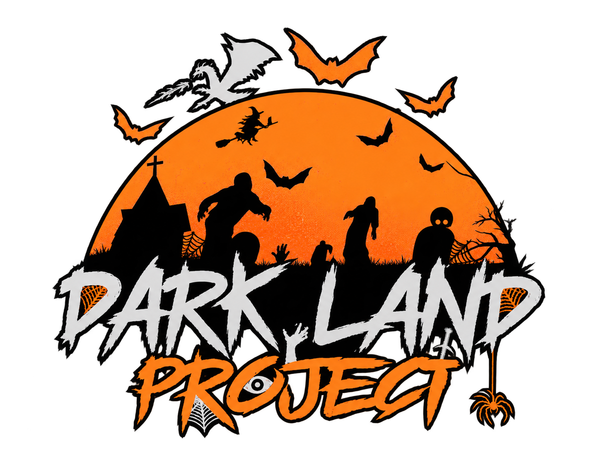

Développement web
Création, intégration et optimisation d’interfaces performantes et responsive.
- HTML5
- CSS3
- JavaScript
- WordPress
- Divi
- Elementor
- XML
- Domaines et hébergement

Abdeljabbar BenhaddouDisponible pour de nouvelles opportunités
Webmaster • Web Developer • Web Design • SEO et maintenance technique
Webmaster et développeur front-end basé à Casablanca, je transforme les besoins clients en sites web modernes, structurés, performants et faciles à administrer.
01 — Profil
Depuis plus de sept ans, je crée, intègre, administre et optimise des sites web avec une approche qui réunit technique, design, contenu et visibilité.
Mon expérience me permet d’intervenir sur l’ensemble du cycle d’un projet : compréhension du besoin, conception, intégration, mise en ligne, optimisation SEO et maintenance.
Rigoureux et orienté solutions, je veille à produire des interfaces cohérentes tout en offrant un accompagnement fiable aux clients et aux utilisateurs.
02 — Compétences
Création, intégration et optimisation d’interfaces performantes et responsive.
Conception d’interfaces modernes adaptées à l’identité et aux objectifs du projet.
Création et structuration de contenus pensés pour les utilisateurs et les moteurs de recherche.
Suivi des sites, amélioration continue, assistance et résolution des incidents techniques.
03 — Réalisations
Une sélection de sites sur lesquels je suis intervenu en web design, front-end, SEO, création et intégration de contenu, ainsi qu’en optimisation.
Contribution commune : Web design • Front-end • SEO • Création et intégration de contenu • Optimisation
04 — Parcours
Allowin · Casablanca, Maroc
Outsourcia - GSK · Casablanca
Majorel - Solocal · Casablanca
RevoMade · À distance · São Paulo, Brésil
SOTEB · El Jadida, Maroc
05 — Formation
ISTA NTIC 1 · Casablanca
ISTA Al Massira · El Jadida
ISTA Hay Al Matar · El Jadida
ISTA Al Massira · El Jadida
Lycée Bir Anzaran · El Jadida
06 — Certifications
Cette section est conçue pour accueillir mes certifications actuelles et futures. Un justificatif ou un lien officiel pourra être ajouté à chaque carte.
Online Professional English Network
Fondamentaux des réseaux, du routage et de la commutation.
Configuration et administration des réseaux.
Éditions 2017 et 2018.
JavaScript et HTML5 Application Development Fundamentals.
Développement logiciel, bases de données et réseaux.
Principes essentiels des systèmes Linux.
Maîtrise des outils bureautiques Microsoft Office.
Langues
Centres d’intérêt
Parlons de votre projet
Je suis disponible pour échanger autour d’un poste, d’une collaboration ou d’un projet digital.